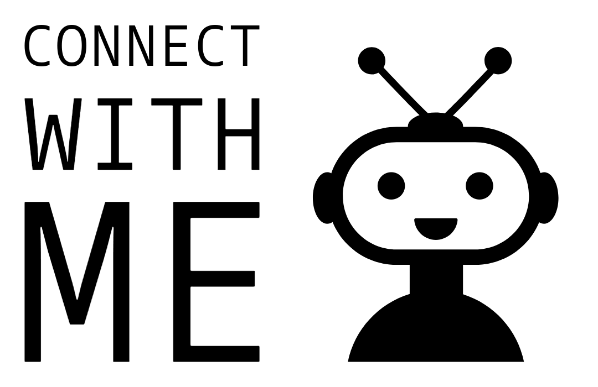

Khyati Garg
Hi There ( ^_^)／
Thank You for visiting!
I’m Khyati and I am excited to share my ongoing journey with you-
filled with curiosity to learn and develop new skills, mixed with creativity
and innovation. This website is created using HTML, my first capstone project
of my Web Development learning journey : )
QUALIFICATIONS SUMMARY
- Advanced written and oral communication skills.
- Proficient at using Microsoft Office, Zendesk, Adobe Express, Smartsheet and WordPress.
- Reliable and able to work under pressure, prioritize, and multi-task to meet tight deadlines without sacrificing the quality of work.
- Excellent at managing projects and using problem-solving skills to meet the organization's objectives.
WORK EXPERIENCE
Technician Project Coordinator (Solink)
November 2023 – Present
- Coordinating seamlessly with the Customer Support and Project Management teams to fulfill Technician Service Requests efficiently.
- Effectively communicate service dates, scope, and pricing to customers, ensuring clarity and satisfaction.
- Demonstrating strong judgment in assessing and identifying suitable candidates (Field Technicians) for work orders, ensuring optimal assignment of resources.
- Maintaining meticulous records by logging technician visits in a central system, and providing detailed notes of work orders for future reference.
- Utilizing analytical skills to analyze data and identify patterns, facilitating workflow optimization and process improvement.
- Playing a crucial role in approving invoices for technician visits, ensuring accuracy and timely processing.
Customer Support Representative (Solink)
March 2023 – October 2023
- Providing customers with excellent support and helping them with troubleshooting.
- Managing and resolving tickets using various platforms such as Zendesk, Intercom, Confluence and Zira.
- Collaborating with other teams (Customer Success, Sales, Field Services, Operations, Product) to improve overall customer satisfaction and experience.
Learning Ambassador/Quality Coach(Amazon Fulfillment Centre Associate)
September 2022 – March 2023
- Responsible for training new associates in different process paths, cultivating and promoting the culture of safety and standard work.
- Analyzed IB Defects using ATLAS and gathered data to engage with associates effectively.
- Responsible for achieving quality metrics by maintaining the DPMO (Defects made per million opportunities) throughout the three quarters.
- Facilitated quality stand-up meetings, effectively communicated defects and barriers, and utilized problem-solving skills to develop solutions.
EDUCATION
Business Management and Entrepreneurship Diploma (Algonquin College, Ottawa ON)
January 2021- April 2022
| Marketing Research & Digital Marketing
| Professional Selling
| Social Innovation
| Project Management For Business Start-Ups
| Entrepreneurship and Innovation
| Retail Management
| E-Commerce
| Business Computer Applications
| Global Entrepreneurship
Achieved commendation for maintaining a 3.97 cumulative GPA throughout 4 semesters as a full-time
student at Algonquin College of Applied Arts and Technology.
